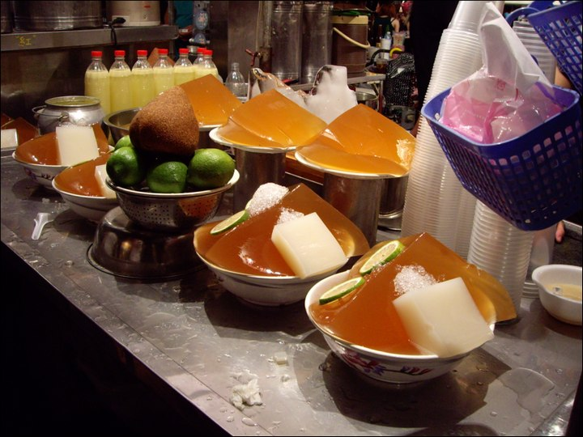

位於台南市北區，有著南部最大夜市之稱，也是台南地區的指標性夜市。還被票選為心目中最受歡迎的夜市，受重視的程度可想而知。花園夜市原位於育德路長達六年的時間，後因租約到期，而遷移至現在的位置「鄭仔寮重劃區」內，在經過重新規劃之下，擴大規模的花園夜市重新出發。
台南夜市最大特色，就是非固定性，每個夜市都有自己的營業時間，並非每晚都有，而上千坪的花園夜市佔地相當廣大，但不擺攤時只是個平凡的停車場，每個星期四、六、日，各個店家皆出籠，平凡的停車場搖身一變，成為規劃整齊的攤位，美食、休閒、日用品、服飾等夜市會出現的商品，也都在花園夜市看得到，大大小小攤位多達三、四百家，也由於攤商家數太多，每個攤商為了吸引遊客注意，紛紛製作廣告旗幟高舉天空，就是要讓自己的攤位受遊客青睞，此為花園夜市的一大特色，也因此成為台南眾多夜市中的奇觀。
愛吃鴨血的妳，一定要來上一碗，
鴨血跟魚蛋吃在嘴裡滿滿的扎實感，
辣度適中，不會太辣，
在寒冷的冬天一定要來一碗，
對鴨血很挑我的一吃就愛上，厲害。
先經由炸後在表面刷上一層獨特的烤醬，
看著雞肉在烤架上滋滋作響，令人食指大動
雞排的皮吃起來有些酥脆，且有炭烤味的口感
來到花園夜市，絕對不能做錯的便是這家二師兄滷味，
看圖中滿滿的人群就知道這家店生意多好，
不管在什麼時間，永遠是大排長龍，人龍絡繹不絕，
使用獨家的老滷汁，滷到每一隻皆入味，光用看的便食指大動，
一口咬下，滷汁的芬芳便噴湧而出，令人一口接一口
是作為消夜最好的選擇。